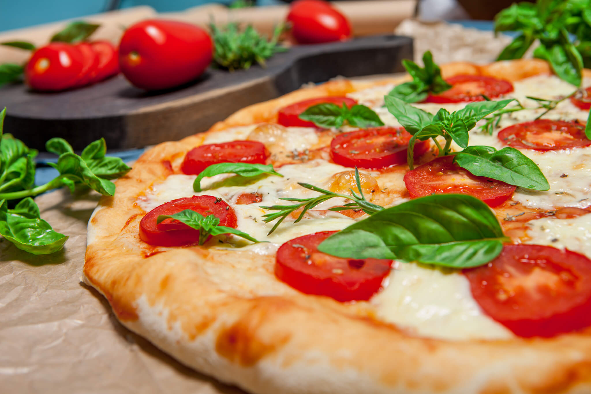
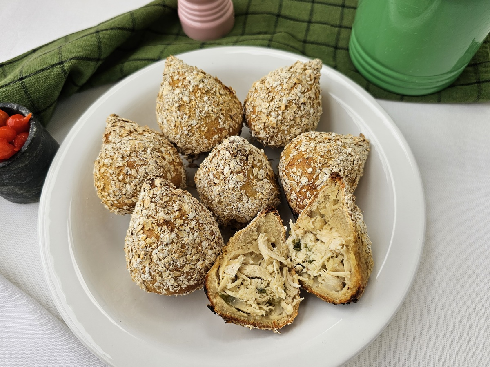
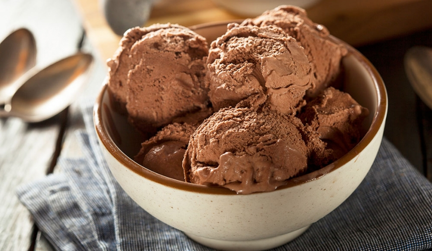

Comidas Salgadas

Pizza Proteica
Ingredientes:
- 3 ovos
- 1 tomate picado
- 50g de queijo minas frescal(fica a sua preferência)
- Sal e temperos a gosto
Modo de preparo:
- Quebre os ovos e bata até ficarem homogêneos, depois acrescente o tomate picado e o queijo.
- Despeje a mistura em uma frigideira já aquecida e tampe.
- Deixe cozinhar em fogo médio por cerca de 5 minutos.
Macronutrientes (por porção):
- Calorias: 350 kcal
- Proteínas: 30 g
- Carboidratos: 5 g
- Gorduras: 25 g

Coxinha Fitness
Ingredientes:
- 200g de coxa e sobrecoxa desfiada(cozida sem pele)
- 1 xícara de batata-doce cozida e amassada
- 2 colheres de sopa de farinha de aveia
- Farelo de aveia para empanar
- Temperos a gosto(sal,pimenta,páprica)
Modo de preparo:
- Tempere o frango desfiado a gosto e misture bem até obter um recheio saboroso.
- Modele pequenas porções da massa de batata-doce com farinha de aveia, formando coxinhas e colocando o
frango no centro.
- Passe cada coxinha na clara de ovo e depois no farelo de aveia para empanar.
- Leve ao forno preaquecido a 200 °C por cerca de 25 minutos ou asse na airfryer a 180 °C por 15
minutos, até dourar.
Macronutrientes (por porção):
- Calorias: 120 kcal
- Proteínas: 12 g
- Carboidratos: 10 g
- Gorduras: 3 g

Strogonoff fit com batata-doce
Ingredientes:
- 1/2 peito de frango
- 1 batata-doce
- 1/2 cebola
- 1 tomate
- 1 copo de iogurte natural
- 1 xícara de molho de tomate
- sal a gosto
- pimenta-do-reino a gosto
- 1 fio de azeite
- alecrim a gosto
Modo de preparo:
- Tempere o frango com sal e pimenta-do-reino. Aqueça 1 fio de azeite em uma panela, refogue a cebola com 1 pitada de sal, adicione o frango e deixe dourar um pouco. Acrescente o tomate, o molho de tomate e cozinhe por 5 minutos. Finalize misturando o iogurte natural e desligando o fogo.
- Cozinhe a batata-doce com casca, corte em rodelas e tempere com sal e alecrim. Em uma frigideira, aqueça 1 fio de azeite e doure as rodelas.
- Sirva o strogonoff de frango com as rodelas de batata-doce douradas.
Macronutrientes (por porção):
- Calorias: 227 kcal
- Proteínas: 17 g
- Carboidratos: 18 g
- >Gorduras: 8,3 g
Comidas Doces

Sorvete Fitness
Ingredientes:
- 1/2 xícara de arroz branco ou integral
- 1 xícara de leite desnatado(ou lei vegetal)
- 1 scoop de whey protein(sua escolha)
- 1 colher de chá de essência de baunilha(opcional)
- 1 colher de chá de adoçante ou mel
- 1 pitada de canela(opcional)
Modo de preparo:
- Cozinhe o arroz com o dobro de água até que fique bem macio e quase sem líquido.
- Aqueça o leite e adicione o whey protein, mexendo até dissolver completamente.
- Junte o leite com whey ao arroz já cozido, mexendo constantemente.
- Acrescente a essência de baunilha, o adoçante e a canela.
- Cozinhe em fogo baixo até atingir uma textura cremosa.
- Sirva quente ou frio, e finalize com um toque de canela ou coco ralado sem açúcar.
Macronutrientes (por porção):
- Calorias: 220 kcal
- Proteínas: 25 g
- Carboidratos: 30 g
- Gorduras: 3 g

Bolo de Banana
Ingredientes:
- 1 banana madura
- 1 ovo
- 2 colheres de sopa de aveia
- 1 scoop de whey protein(sua escolha)
- Canela a gosto
Modo de preparo:
- Amasse bem a banana e misture com os demais ingredientes até obter uma massa uniforme.
- Coloque a mistura em uma caneca e leve ao micro-ondas por 2 a 3 minutos.
- Deixe esfriar por alguns instantes antes de saborear.
Macronutrientes (por porção):
- Calorias: 270 kcal
- Proteínas: 22 g
- Carboidratos: 35 g
- Gorduras: 6 g

Cookies Caseiros
Ingredientes:
- 2 bananas maduras
- 1 xícara de aveia em flocos
- 1 colher de sopa de pasta de amendoim
- Canela a gosto
Modo de preparo:
- Amasse bem as bananas e misture com a aveia, a pasta de amendoim e a canela até formar uma massa
consistente.
- Modele porções no formato de cookies e disponha em uma assadeira levemente untada.
- Asse em forno preaquecido a 180 °C por aproximadamente 15 minutos.
Macronutrientes (por porção):
- Calorias: 90 kcal
- Proteínas: 3 g
- Carboidratos: 15 g
- Gorduras: 3 g
.png)